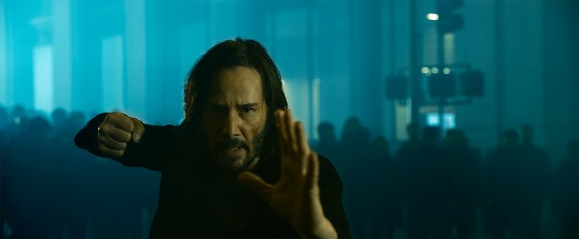
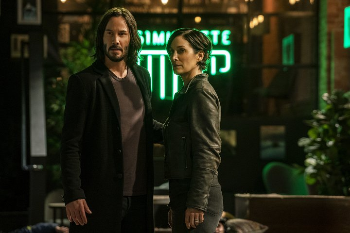
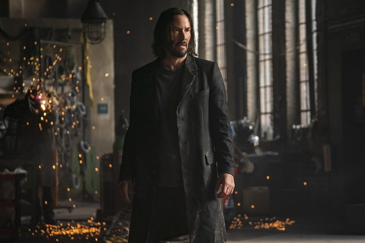

Detail filmu


| Rok vydání: | 2021 | |
|---|---|---|
| Žánr: | Akční / Sci-Fi | |
| Premiéra: | 23.12.2021 | |
| Délka: | 148 min | |
| Přístupnost: | 12+ | |
| Režie | Lana Wachowski | |
| Obsazení | Keanu Reeves, Carrie-Anne Moss, Yahya Abdul-Mateen II, Jonathan Groff, Jessica Henwick, Neil Patrick Harris ... |
Matrix Resurrections
The Matrix Resurrections
Již téměř dvacet let žije Neo (Keanu Reeves) zdánlivě poklidný život jako Thomas A. Anderson v San Franciscu. Navštěvuje terapeuta, který mu předepisuje modré pilulky. Potkává každý den Trinity (Carrie-Anne Moss), ale navzájem se nepoznávají. Jednoho dne narazí na Morphea, který mu nabídne červenou pilulku, aby znovu otevřel svou mysl Matrixu.
Galerie


